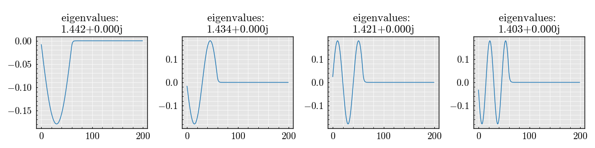

Note
Go to the end to download the full example code
Example: 1D eigenmodes 2#
boundaries: {left: anti-symmetric, right: anti-symmetric} |
|---|
derivative: 2 |
accuracy: 6 |
from scipy.sparse import linalg
from MPSPlots.render2D import SceneList
from PyFinitDiff.finite_difference_1D import FiniteDifference
from PyFinitDiff.finite_difference_1D import get_circular_mesh_triplet
from PyFinitDiff.finite_difference_1D import Boundaries
n_x = 200
sparse_instance = FiniteDifference(
n_x=n_x,
dx=1,
derivative=2,
accuracy=6,
boundaries=Boundaries()
)
mesh_triplet = get_circular_mesh_triplet(
n_x=n_x,
radius=60,
value_out=1,
value_in=1.4444,
x_offset=-100
)
dynamic_triplet = sparse_instance.triplet + mesh_triplet
eigen_values, eigen_vectors = linalg.eigs(
dynamic_triplet.to_dense(),
k=4,
which='LM',
sigma=1.4444
)
figure = SceneList(unit_size=(3, 3), tight_layout=True, ax_orientation='horizontal')
for i in range(4):
Vector = eigen_vectors[:, i].real.reshape([sparse_instance.n_x])
ax = figure.append_ax(title=f'eigenvalues: \n{eigen_values[i]:.3f}')
_ = ax.add_line(y=Vector)
figure.show()
# -

SceneList(unit_size=(3, 3), tight_layout=True, transparent_background=False, title='', padding=1.0, axis_list=[Axis(row=0, col=0, x_label=None, y_label=None, title='eigenvalues: \n1.442+0.000j', show_grid=True, show_legend=False, legend_position='best', x_scale='linear', y_scale='linear', x_limits=None, y_limits=None, equal_limits=False, projection=None, font_size=16, tick_size=14, y_tick_position='left', x_tick_position='bottom', show_ticks=True, show_colorbar=None, legend_font_size=14, line_width=None, line_style=None, x_scale_factor=None, y_scale_factor=None, aspect_ratio='auto', _artist_list=[Line(y=array([-8.24407218e-03, -1.73225543e-02, -2.63702502e-02, -3.53438042e-02,
-4.42257312e-02, -5.29939646e-02, -6.16259965e-02, -7.00996365e-02,
-7.83931049e-02, -8.64850855e-02, -9.43547802e-02, -1.01981962e-01,
-1.09347028e-01, -1.16431047e-01, -1.23215813e-01, -1.29683886e-01,
-1.35818644e-01, -1.41604317e-01, -1.47026035e-01, -1.52069864e-01,
-1.56722839e-01, -1.60973002e-01, -1.64809428e-01, -1.68222258e-01,
-1.71202718e-01, -1.73743150e-01, -1.75837023e-01, -1.77478956e-01,
-1.78664728e-01, -1.79391293e-01, -1.79656781e-01, -1.79460512e-01,
-1.78802989e-01, -1.77685903e-01, -1.76112125e-01, -1.74085699e-01,
-1.71611834e-01, -1.68696888e-01, -1.65348354e-01, -1.61574838e-01,
-1.57386039e-01, -1.52792722e-01, -1.47806694e-01, -1.42440770e-01,
-1.36708742e-01, -1.30625342e-01, -1.24206205e-01, -1.17467831e-01,
-1.10427538e-01, -1.03103422e-01, -9.55143074e-02, -8.76796996e-02,
-7.96197354e-02, -7.13551309e-02, -6.29071281e-02, -5.42974422e-02,
-4.55481908e-02, -3.66815181e-02, -2.77175408e-02, -1.86865363e-02,
-9.98776533e-03, -5.13511369e-03, -2.63791756e-03, -1.35671903e-03,
-6.97968884e-04, -3.59076772e-04, -1.84729133e-04, -9.50347967e-05,
-4.88911055e-05, -2.51522640e-05, -1.29397032e-05, -6.65689255e-06,
-3.42467039e-06, -1.76183815e-06, -9.06386113e-07, -4.66294695e-07,
-2.39887549e-07, -1.23411303e-07, -6.34895385e-08, -3.26624985e-08,
-1.68033794e-08, -8.64457941e-09, -4.44724544e-09, -2.28790676e-09,
-1.17702469e-09, -6.05526021e-10, -3.11515763e-10, -1.60260760e-10,
-8.24469475e-11, -4.24152187e-11, -2.18207144e-11, -1.12257792e-11,
-5.77513936e-12, -2.97104819e-12, -1.52845173e-12, -7.86328443e-13,
-4.04536355e-13, -2.08082887e-13, -1.07047994e-13, -5.50567785e-14,
-2.83042192e-14, -1.45659085e-14, -7.50434728e-15, -3.88871194e-15,
-1.98123122e-15, -1.04271190e-15, -5.30246575e-16, -2.36784653e-16,
-1.39472051e-16, -8.56739253e-17, -4.59475231e-17, -2.79058032e-17,
-2.94191824e-18, -2.05929965e-17, 2.46721404e-17, -1.94009591e-17,
5.34708850e-19, -3.26014421e-18, -5.31484699e-19, 1.37143541e-17,
-1.98550165e-17, 1.11620345e-17, 3.10764896e-18, -9.92819165e-18,
-2.54985370e-18, -4.94320928e-18, -1.03858856e-17, -2.51313696e-17,
-4.80226164e-18, -5.58035671e-18, -1.89141575e-17, -3.74099505e-17,
6.21594801e-18, 8.99243801e-18, -3.38660170e-18, 2.29553125e-17,
-1.10389161e-17, -2.52172469e-18, -2.17641932e-17, -6.11130950e-18,
-8.42957073e-18, 6.09637162e-18, -6.49541617e-19, 2.80942915e-17,
5.71587008e-19, -4.18451156e-17, -1.05847603e-17, -2.24876276e-17,
-4.47076736e-17, -2.04089208e-17, -1.71284471e-17, -1.87076743e-17,
1.86408338e-18, -6.63212262e-19, 1.68812313e-17, 4.22080556e-18,
8.97641854e-18, -1.98548658e-17, 1.25553205e-17, -1.00408490e-17,
5.88871240e-18, -8.69336612e-18, -3.04916701e-17, 3.38318400e-17,
3.44738887e-17, 2.89414886e-17, -9.92314382e-18, 1.03408983e-17,
-1.51782244e-17, 1.94079161e-17, 8.77802681e-18, 3.98557340e-19,
-1.99229557e-17, -2.08384739e-18, 1.51888942e-17, 4.48202634e-18,
-1.37262424e-17, 5.81384743e-18, 2.89528873e-17, 3.63059036e-19,
3.13169854e-17, -3.48647189e-18, 2.28424056e-17, -1.07639180e-17,
-3.95589468e-18, 1.28389778e-17, -1.28769083e-17, -8.14236238e-18,
3.41804672e-18, -2.40361326e-17, -9.60376998e-19, 2.97197486e-17,
-3.47417039e-18, -1.57042795e-17, -1.74341036e-17, 1.77445345e-17,
-2.90197388e-17, -1.38042735e-17, 1.88337929e-18, 2.47785598e-17]), x=array([ 0, 1, 2, 3, 4, 5, 6, 7, 8, 9, 10, 11, 12,
13, 14, 15, 16, 17, 18, 19, 20, 21, 22, 23, 24, 25,
26, 27, 28, 29, 30, 31, 32, 33, 34, 35, 36, 37, 38,
39, 40, 41, 42, 43, 44, 45, 46, 47, 48, 49, 50, 51,
52, 53, 54, 55, 56, 57, 58, 59, 60, 61, 62, 63, 64,
65, 66, 67, 68, 69, 70, 71, 72, 73, 74, 75, 76, 77,
78, 79, 80, 81, 82, 83, 84, 85, 86, 87, 88, 89, 90,
91, 92, 93, 94, 95, 96, 97, 98, 99, 100, 101, 102, 103,
104, 105, 106, 107, 108, 109, 110, 111, 112, 113, 114, 115, 116,
117, 118, 119, 120, 121, 122, 123, 124, 125, 126, 127, 128, 129,
130, 131, 132, 133, 134, 135, 136, 137, 138, 139, 140, 141, 142,
143, 144, 145, 146, 147, 148, 149, 150, 151, 152, 153, 154, 155,
156, 157, 158, 159, 160, 161, 162, 163, 164, 165, 166, 167, 168,
169, 170, 171, 172, 173, 174, 175, 176, 177, 178, 179, 180, 181,
182, 183, 184, 185, 186, 187, 188, 189, 190, 191, 192, 193, 194,
195, 196, 197, 198, 199]), label='', color=None, line_style='-', line_width=1, x_scale_factor=1, y_scale_factor=1, layer_position=1, mappable=[<matplotlib.lines.Line2D object at 0x130f8b2d0>])], mpl_ax=<Axes: title={'center': 'eigenvalues: \n1.442+0.000j'}>, colorbar=Colorbar(artist=None, discreet=False, position='right', colormap=<matplotlib.colors.LinearSegmentedColormap object at 0x125418050>, orientation='vertical', symmetric=False, log_norm=False, numeric_format=None, n_ticks=None, label_size=None, width='10%', padding=0.1, norm=None, label='', mappable=None)), Axis(row=0, col=1, x_label=None, y_label=None, title='eigenvalues: \n1.434+0.000j', show_grid=True, show_legend=False, legend_position='best', x_scale='linear', y_scale='linear', x_limits=None, y_limits=None, equal_limits=False, projection=None, font_size=16, tick_size=14, y_tick_position='left', x_tick_position='bottom', show_ticks=True, show_colorbar=None, legend_font_size=14, line_width=None, line_style=None, x_scale_factor=None, y_scale_factor=None, aspect_ratio='auto', _artist_list=[Line(y=array([-1.64694471e-02, -3.44789889e-02, -5.21618759e-02, -6.92962124e-02,
-8.57171036e-02, -1.01257379e-01, -1.15757451e-01, -1.29068352e-01,
-1.41053339e-01, -1.51589291e-01, -1.60567971e-01, -1.67897143e-01,
-1.73501515e-01, -1.77323512e-01, -1.79323871e-01, -1.79482043e-01,
-1.77796403e-01, -1.74284268e-01, -1.68981716e-01, -1.61943223e-01,
-1.53241093e-01, -1.42964723e-01, -1.31219682e-01, -1.18126626e-01,
-1.03820060e-01, -8.84469542e-02, -7.21652366e-02, -5.51421682e-02,
-3.75526265e-02, -1.95773082e-02, -1.40087287e-03, 1.67899535e-02,
3.48082974e-02, 5.24690570e-02, 6.95908040e-02, 8.59976473e-02,
1.01521040e-01, 1.16001511e-01, 1.29290303e-01, 1.41250901e-01,
1.51760434e-01, 1.60710938e-01, 1.68010464e-01, 1.73584025e-01,
1.77374365e-01, 1.79342544e-01, 1.79468345e-01, 1.77750474e-01,
1.74206579e-01, 1.68873067e-01, 1.61804728e-01, 1.53074176e-01,
1.42771099e-01, 1.31001339e-01, 1.17885809e-01, 1.03559246e-01,
8.81688059e-02, 7.18719055e-02, 5.48306167e-02, 3.72345261e-02,
2.00176095e-02, 1.03521560e-02, 5.34908876e-03, 2.76719239e-03,
1.43190485e-03, 7.40958647e-04, 3.83416424e-04, 1.98402283e-04,
1.02665037e-04, 5.31249441e-05, 2.74899792e-05, 1.42249365e-05,
7.36082110e-06, 3.80892295e-06, 1.97096137e-06, 1.01989166e-06,
5.27752093e-07, 2.73090058e-07, 1.41312902e-07, 7.31236297e-08,
3.78384786e-08, 1.95798604e-08, 1.01317746e-08, 5.24277768e-09,
2.71292238e-09, 1.40382604e-09, 7.26422403e-10, 3.75893772e-10,
1.94509596e-10, 1.00650746e-10, 5.20826319e-11, 2.69506261e-11,
1.39458418e-11, 7.21638965e-12, 3.73416807e-12, 1.93222861e-12,
9.99867045e-13, 5.17363401e-13, 2.67702817e-13, 1.38485439e-13,
7.16664507e-14, 3.70912484e-14, 1.91782705e-14, 9.91944837e-15,
5.15365654e-15, 2.67754920e-15, 1.38056259e-15, 7.11768532e-16,
3.71979451e-16, 2.16396806e-16, 1.20050217e-16, 5.72437123e-17,
2.96928616e-17, 2.49483832e-17, 2.65553183e-17, 4.41690767e-18,
1.45503088e-17, 3.79467645e-17, -4.08172101e-18, -2.30995201e-17,
1.61237448e-17, 1.15769411e-17, 1.01390554e-17, -6.61014439e-18,
1.13100509e-17, 4.63779563e-18, -1.30076081e-17, 9.39157777e-18,
1.87188534e-17, 2.09859770e-17, -5.74398181e-19, 2.27749254e-17,
-1.61204493e-17, -2.02090930e-18, 5.93489135e-18, -1.11811734e-17,
5.13858117e-18, 1.42611576e-17, 1.64005541e-17, 2.42263197e-17,
-9.99134360e-18, -3.58621888e-18, -1.43433058e-17, 1.03655287e-17,
1.21473426e-18, 3.74204494e-17, 2.20837868e-17, 3.82486887e-17,
5.77103943e-17, 6.41920146e-17, 3.97026292e-17, 1.73193774e-17,
4.15670454e-18, -7.34667010e-18, -3.83733435e-17, -1.44609546e-17,
2.00716086e-17, 2.10349373e-17, 1.52177715e-17, -1.43875536e-17,
1.63182272e-18, -1.92104794e-18, -1.74411464e-17, -9.56015989e-18,
1.05221821e-18, 1.11130119e-17, -1.10828547e-17, 4.96668460e-18,
-2.63886585e-18, -4.58357766e-18, -9.39057577e-18, -6.73264294e-18,
1.60429830e-17, -5.69465603e-18, -3.79328922e-18, -4.70631342e-18,
-5.54146830e-18, -1.98792730e-19, 1.27460783e-19, -2.50487909e-17,
-2.81803098e-18, -1.35693382e-17, -2.52221039e-17, -1.40096882e-17,
-3.84549458e-18, -9.41362605e-18, 1.42799031e-17, 1.25269437e-17,
1.09545846e-17, 6.61272743e-18, -1.23574402e-17, -2.91971603e-17,
1.12237108e-17, 2.88636310e-17, 2.08536223e-17, 2.59135307e-17,
-5.34065454e-18, 1.88014206e-18, 3.08613331e-18, 6.63617080e-18]), x=array([ 0, 1, 2, 3, 4, 5, 6, 7, 8, 9, 10, 11, 12,
13, 14, 15, 16, 17, 18, 19, 20, 21, 22, 23, 24, 25,
26, 27, 28, 29, 30, 31, 32, 33, 34, 35, 36, 37, 38,
39, 40, 41, 42, 43, 44, 45, 46, 47, 48, 49, 50, 51,
52, 53, 54, 55, 56, 57, 58, 59, 60, 61, 62, 63, 64,
65, 66, 67, 68, 69, 70, 71, 72, 73, 74, 75, 76, 77,
78, 79, 80, 81, 82, 83, 84, 85, 86, 87, 88, 89, 90,
91, 92, 93, 94, 95, 96, 97, 98, 99, 100, 101, 102, 103,
104, 105, 106, 107, 108, 109, 110, 111, 112, 113, 114, 115, 116,
117, 118, 119, 120, 121, 122, 123, 124, 125, 126, 127, 128, 129,
130, 131, 132, 133, 134, 135, 136, 137, 138, 139, 140, 141, 142,
143, 144, 145, 146, 147, 148, 149, 150, 151, 152, 153, 154, 155,
156, 157, 158, 159, 160, 161, 162, 163, 164, 165, 166, 167, 168,
169, 170, 171, 172, 173, 174, 175, 176, 177, 178, 179, 180, 181,
182, 183, 184, 185, 186, 187, 188, 189, 190, 191, 192, 193, 194,
195, 196, 197, 198, 199]), label='', color=None, line_style='-', line_width=1, x_scale_factor=1, y_scale_factor=1, layer_position=1, mappable=[<matplotlib.lines.Line2D object at 0x130f8b110>])], mpl_ax=<Axes: title={'center': 'eigenvalues: \n1.434+0.000j'}>, colorbar=Colorbar(artist=None, discreet=False, position='right', colormap=<matplotlib.colors.LinearSegmentedColormap object at 0x125418050>, orientation='vertical', symmetric=False, log_norm=False, numeric_format=None, n_ticks=None, label_size=None, width='10%', padding=0.1, norm=None, label='', mappable=None)), Axis(row=0, col=2, x_label=None, y_label=None, title='eigenvalues: \n1.421+0.000j', show_grid=True, show_legend=False, legend_position='best', x_scale='linear', y_scale='linear', x_limits=None, y_limits=None, equal_limits=False, projection=None, font_size=16, tick_size=14, y_tick_position='left', x_tick_position='bottom', show_ticks=True, show_colorbar=None, legend_font_size=14, line_width=None, line_style=None, x_scale_factor=None, y_scale_factor=None, aspect_ratio='auto', _artist_list=[Line(y=array([ 2.46572912e-02, 5.13045076e-02, 7.68088928e-02, 1.00521242e-01,
1.21910779e-01, 1.40486014e-01, 1.55818233e-01, 1.67553491e-01,
1.75420885e-01, 1.79238801e-01, 1.78919105e-01, 1.74469177e-01,
1.65991740e-01, 1.53682491e-01, 1.37825581e-01, 1.18787057e-01,
9.70064095e-02, 7.29864320e-02, 4.72816098e-02, 2.04853221e-02,
-6.78385596e-03, -3.38964331e-02, -6.02265330e-02, -8.51663422e-02,
-1.08140141e-01, -1.28617595e-01, -1.46125995e-01, -1.60261170e-01,
-1.70696819e-01, -1.77192043e-01, -1.79596903e-01, -1.77855884e-01,
-1.72009176e-01, -1.62191748e-01, -1.48630228e-01, -1.31637675e-01,
-1.11606351e-01, -8.89986671e-02, -6.43365059e-02, -3.81891780e-02,
-1.11602775e-02, 1.61262507e-02, 4.30405149e-02, 6.89612165e-02,
9.32899930e-02, 1.15465230e-01, 1.34975027e-01, 1.51369012e-01,
1.64268742e-01, 1.73376433e-01, 1.78481842e-01, 1.79467112e-01,
1.76309500e-01, 1.69081896e-01, 1.57951148e-01, 1.43174205e-01,
1.25092151e-01, 1.04121367e-01, 8.07379273e-02, 5.55035233e-02,
3.01333363e-02, 1.57377544e-02, 8.21240652e-03, 4.29039348e-03,
2.24199924e-03, 1.17159805e-03, 6.12236072e-04, 3.19932564e-04,
1.67185240e-04, 8.73649908e-05, 4.56538012e-05, 2.38570341e-05,
1.24668277e-05, 6.51471568e-06, 3.40435604e-06, 1.77899400e-06,
9.29638262e-07, 4.85795511e-07, 2.53859258e-07, 1.32657715e-07,
6.93221496e-08, 3.62252615e-08, 1.89300184e-08, 9.89214658e-09,
5.16927999e-09, 2.70127975e-09, 1.41159160e-09, 7.37646966e-10,
3.85467794e-10, 2.01431584e-10, 1.05260911e-10, 5.50055668e-11,
2.87439192e-11, 1.50205324e-11, 7.84916292e-12, 4.10167178e-12,
2.14339900e-12, 1.12001309e-12, 5.85283297e-13, 3.05825372e-13,
1.59780274e-13, 8.34864280e-14, 4.36679000e-14, 2.28374810e-14,
1.19225884e-14, 6.25036585e-15, 3.25989065e-15, 1.65941543e-15,
9.03532821e-16, 4.99455240e-16, 2.56239688e-16, 1.47181351e-16,
6.42164599e-17, 5.30320535e-17, -3.39245691e-18, 2.73927269e-17,
5.86954687e-18, 3.51571219e-17, 6.64151186e-18, -1.59625670e-17,
4.08644011e-17, -1.78327517e-17, -2.28045648e-18, 2.02068650e-17,
5.30958148e-18, 6.32433852e-18, -1.39289405e-17, 4.43615482e-17,
2.16875099e-17, 7.93028284e-18, 3.07388918e-17, 2.74476063e-17,
-2.41629629e-17, -8.39406028e-18, 1.94421786e-17, -1.51475870e-17,
1.63116580e-17, 1.45562784e-17, 3.60538665e-17, 2.23195245e-17,
-2.54630679e-17, -1.58988088e-17, -4.57234678e-19, -2.81771161e-17,
2.73577414e-19, 2.83382659e-17, -3.89204735e-18, 4.22301625e-17,
3.81268958e-17, 6.24863559e-17, 3.78565100e-17, 1.71771309e-17,
-3.95686138e-18, -2.15640723e-18, -3.33267810e-17, -3.02805655e-17,
-3.18161337e-17, 1.97630288e-17, -1.19327416e-17, 1.09027602e-17,
-1.22648866e-17, 1.41815942e-17, 1.81073490e-17, -3.19885876e-17,
-1.30574917e-17, -4.76228625e-17, 2.31106294e-17, -1.75617587e-17,
3.95751529e-20, -1.75532899e-17, -1.72491113e-17, -3.73166247e-18,
9.58486220e-18, 1.23337606e-17, -2.03361394e-17, -1.41422521e-17,
1.54542681e-17, -2.39179004e-17, -3.08281858e-17, 1.41871301e-17,
-2.68038829e-17, -3.46145052e-18, -2.08717566e-17, 1.29417810e-17,
3.78287106e-18, -2.49225953e-17, 2.62603136e-17, 1.36538604e-17,
2.21050121e-18, 1.45793894e-17, 2.16728261e-17, -3.38670163e-17,
2.03419429e-17, 3.18622146e-17, 2.88532279e-17, -1.00926405e-17,
3.05862014e-17, 1.56555361e-17, -1.64281337e-17, -2.77239324e-17]), x=array([ 0, 1, 2, 3, 4, 5, 6, 7, 8, 9, 10, 11, 12,
13, 14, 15, 16, 17, 18, 19, 20, 21, 22, 23, 24, 25,
26, 27, 28, 29, 30, 31, 32, 33, 34, 35, 36, 37, 38,
39, 40, 41, 42, 43, 44, 45, 46, 47, 48, 49, 50, 51,
52, 53, 54, 55, 56, 57, 58, 59, 60, 61, 62, 63, 64,
65, 66, 67, 68, 69, 70, 71, 72, 73, 74, 75, 76, 77,
78, 79, 80, 81, 82, 83, 84, 85, 86, 87, 88, 89, 90,
91, 92, 93, 94, 95, 96, 97, 98, 99, 100, 101, 102, 103,
104, 105, 106, 107, 108, 109, 110, 111, 112, 113, 114, 115, 116,
117, 118, 119, 120, 121, 122, 123, 124, 125, 126, 127, 128, 129,
130, 131, 132, 133, 134, 135, 136, 137, 138, 139, 140, 141, 142,
143, 144, 145, 146, 147, 148, 149, 150, 151, 152, 153, 154, 155,
156, 157, 158, 159, 160, 161, 162, 163, 164, 165, 166, 167, 168,
169, 170, 171, 172, 173, 174, 175, 176, 177, 178, 179, 180, 181,
182, 183, 184, 185, 186, 187, 188, 189, 190, 191, 192, 193, 194,
195, 196, 197, 198, 199]), label='', color=None, line_style='-', line_width=1, x_scale_factor=1, y_scale_factor=1, layer_position=1, mappable=[<matplotlib.lines.Line2D object at 0x130f89c50>])], mpl_ax=<Axes: title={'center': 'eigenvalues: \n1.421+0.000j'}>, colorbar=Colorbar(artist=None, discreet=False, position='right', colormap=<matplotlib.colors.LinearSegmentedColormap object at 0x125418050>, orientation='vertical', symmetric=False, log_norm=False, numeric_format=None, n_ticks=None, label_size=None, width='10%', padding=0.1, norm=None, label='', mappable=None)), Axis(row=0, col=3, x_label=None, y_label=None, title='eigenvalues: \n1.403+0.000j', show_grid=True, show_legend=False, legend_position='best', x_scale='linear', y_scale='linear', x_limits=None, y_limits=None, equal_limits=False, projection=None, font_size=16, tick_size=14, y_tick_position='left', x_tick_position='bottom', show_ticks=True, show_colorbar=None, legend_font_size=14, line_width=None, line_style=None, x_scale_factor=None, y_scale_factor=None, aspect_ratio='auto', _artist_list=[Line(y=array([-3.27884598e-02, -6.76368952e-02, -9.97702910e-02, -1.27791554e-01,
-1.50574807e-01, -1.67189762e-01, -1.76955913e-01, -1.79473180e-01,
-1.74638441e-01, -1.62649749e-01, -1.43998213e-01, -1.19447881e-01,
-9.00044428e-02, -5.68740291e-02, -2.14138067e-02, 1.49236187e-02,
5.06497075e-02, 8.43009631e-02, 1.14498883e-01, 1.40006429e-01,
1.59778699e-01, 1.73005737e-01, 1.79145704e-01, 1.77947080e-01,
1.69458967e-01, 1.54029074e-01, 1.32289478e-01, 1.05130727e-01,
7.36653618e-02, 3.91823420e-02, 3.09424238e-03, -3.31206109e-02,
-6.79786994e-02, -1.00052083e-01, -1.28026897e-01, -1.50757170e-01,
-1.67311771e-01, -1.77012550e-01, -1.79462123e-01, -1.74560143e-01,
-1.62507418e-01, -1.43797678e-01, -1.19197358e-01, -8.97141935e-02,
-5.65559437e-02, -2.10809154e-02, 1.52576792e-02, 5.09712527e-02,
8.45968210e-02, 1.14756934e-01, 1.40216102e-01, 1.59931406e-01,
1.73095221e-01, 1.79168299e-01, 1.77901863e-01, 1.69347799e-01,
1.53856472e-01, 1.32061098e-01, 1.04843808e-01, 7.33489558e-02,
4.03824088e-02, 2.13886175e-02, 1.13189972e-02, 5.99675430e-03,
3.17783450e-03, 1.68403421e-03, 8.92417052e-04, 4.72916136e-04,
2.50611134e-04, 1.32805667e-04, 7.03773412e-05, 3.72948706e-05,
1.97635680e-05, 1.04732532e-05, 5.55006221e-06, 2.94112918e-06,
1.55858449e-06, 8.25936383e-07, 4.37686193e-07, 2.31941839e-07,
1.22912300e-07, 6.51345765e-08, 3.45165867e-08, 1.82912797e-08,
9.69304750e-09, 5.13660995e-09, 2.72202956e-09, 1.44247759e-09,
7.64408243e-10, 4.05080732e-10, 2.14663319e-10, 1.13755944e-10,
6.02823712e-11, 3.19452876e-11, 1.69286782e-11, 8.97096615e-12,
4.75400234e-12, 2.51924984e-12, 1.33506034e-12, 7.07524083e-13,
3.74932618e-13, 1.98695827e-13, 1.05286892e-13, 5.57901935e-14,
2.95427945e-14, 1.56726743e-14, 8.31006094e-15, 4.34711166e-15,
2.33843299e-15, 1.24208142e-15, 6.32101847e-16, 3.62633348e-16,
1.57085710e-16, 1.12317652e-16, 2.90365843e-17, 3.06868312e-17,
-7.63490523e-18, -8.71965098e-18, -3.60073207e-18, -1.60414933e-17,
5.65414410e-17, -2.18919588e-17, -5.56941526e-18, 4.01686040e-17,
-2.07704658e-17, -3.43464455e-18, -2.40497242e-17, -1.10378681e-17,
-3.93279760e-18, -2.40749901e-17, -1.90737881e-17, 6.19075224e-18,
-6.00234196e-17, 7.16595327e-18, 1.84983732e-17, -5.59252701e-17,
4.72979361e-18, -2.91880026e-17, -9.96181371e-18, -2.12797852e-17,
-3.61782636e-17, 7.48228025e-18, 2.65863522e-17, -7.02421219e-17,
-1.82621337e-18, 3.57787312e-18, -4.22414207e-17, -2.78861940e-17,
-3.27385693e-17, -2.93378485e-17, -3.02356768e-17, -1.01149221e-17,
-1.16391251e-17, 1.61059865e-17, 1.58954730e-18, 2.34795177e-17,
-7.39704795e-18, 4.60375018e-17, -3.74321634e-17, 3.44183627e-17,
-1.14977722e-17, 1.90950257e-17, 3.03744010e-17, -2.68549325e-17,
4.36974693e-18, -1.14200132e-17, 5.94515077e-17, -1.75085904e-19,
2.83969314e-17, -3.35852710e-17, 1.39716697e-17, 1.29784638e-17,
2.50192793e-18, 1.82464723e-18, -2.47957948e-17, -5.91448610e-18,
5.06117150e-17, -1.06039242e-17, -8.45977304e-18, 3.94624179e-17,
-2.65389343e-18, 3.84268256e-17, -1.49577619e-17, 3.31446072e-17,
7.73545205e-18, -1.54139523e-17, 5.51899496e-18, -1.27330860e-17,
-3.10174792e-17, -3.31445064e-18, 1.77972198e-17, -9.37573709e-18,
3.56327942e-18, -2.72887226e-17, -1.30972736e-17, -3.86978252e-17,
4.27086978e-17, 4.93092426e-18, -1.25274553e-17, -2.29382421e-17]), x=array([ 0, 1, 2, 3, 4, 5, 6, 7, 8, 9, 10, 11, 12,
13, 14, 15, 16, 17, 18, 19, 20, 21, 22, 23, 24, 25,
26, 27, 28, 29, 30, 31, 32, 33, 34, 35, 36, 37, 38,
39, 40, 41, 42, 43, 44, 45, 46, 47, 48, 49, 50, 51,
52, 53, 54, 55, 56, 57, 58, 59, 60, 61, 62, 63, 64,
65, 66, 67, 68, 69, 70, 71, 72, 73, 74, 75, 76, 77,
78, 79, 80, 81, 82, 83, 84, 85, 86, 87, 88, 89, 90,
91, 92, 93, 94, 95, 96, 97, 98, 99, 100, 101, 102, 103,
104, 105, 106, 107, 108, 109, 110, 111, 112, 113, 114, 115, 116,
117, 118, 119, 120, 121, 122, 123, 124, 125, 126, 127, 128, 129,
130, 131, 132, 133, 134, 135, 136, 137, 138, 139, 140, 141, 142,
143, 144, 145, 146, 147, 148, 149, 150, 151, 152, 153, 154, 155,
156, 157, 158, 159, 160, 161, 162, 163, 164, 165, 166, 167, 168,
169, 170, 171, 172, 173, 174, 175, 176, 177, 178, 179, 180, 181,
182, 183, 184, 185, 186, 187, 188, 189, 190, 191, 192, 193, 194,
195, 196, 197, 198, 199]), label='', color=None, line_style='-', line_width=1, x_scale_factor=1, y_scale_factor=1, layer_position=1, mappable=[<matplotlib.lines.Line2D object at 0x130f8b390>])], mpl_ax=<Axes: title={'center': 'eigenvalues: \n1.403+0.000j'}>, colorbar=Colorbar(artist=None, discreet=False, position='right', colormap=<matplotlib.colors.LinearSegmentedColormap object at 0x125418050>, orientation='vertical', symmetric=False, log_norm=False, numeric_format=None, n_ticks=None, label_size=None, width='10%', padding=0.1, norm=None, label='', mappable=None))], _mpl_figure=<Figure size 1200x300 with 4 Axes>, mpl_axis_generated=False, axis_generated=True, ax_orientation='horizontal')
Total running time of the script: (0 minutes 0.346 seconds)